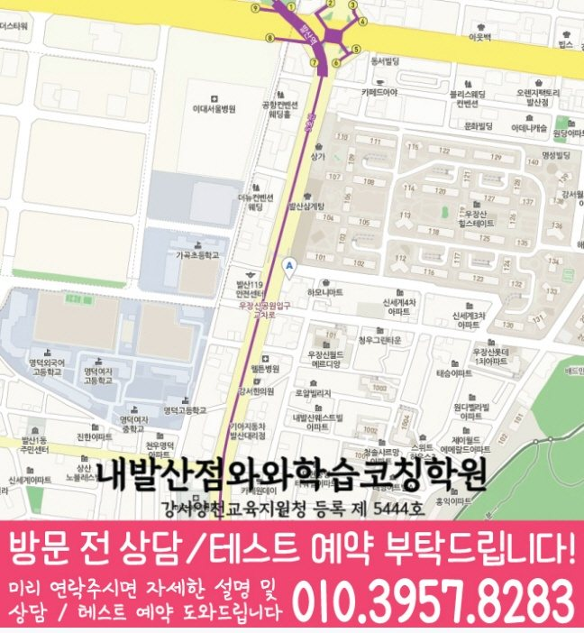

30초 핵심 안내
내발산동 고등 영수학원 선택 전 확인할 기준
서울 강서구 내발산동 고등 영수학원 페이지는 고1 학생의 영어·수학 취약점 진단과 주간 학습 설계를 설명합니다. 위치 정보는 서울 강서구 마곡중앙4로 74 이웰메디파크 제4층 401,402호이며, 학원수강신청 확인 기준과 학교 시험 준비, 학부모 상담 체크사항을 포함합니다. 성적이나 입시 결과를 보장하지 않고 점검 가능한 학습 과정을 중심으로 내발산동 페이지에서 안내합니다.
High School English & Math
서울 강서구 내발산동에서 고등 영어와 수학 학원을 비교하는 학부모를 위한 안내입니다. 내발산동 고등 영수학원의 학생 유형별 학습 설계, 학교 일정 반영, 학원수강신청 체크 기준과 안내 주소를 확인하세요.
30초 핵심 안내
서울 강서구 내발산동 고등 영수학원 페이지는 고1 학생의 영어·수학 취약점 진단과 주간 학습 설계를 설명합니다. 위치 정보는 서울 강서구 마곡중앙4로 74 이웰메디파크 제4층 401,402호이며, 학원수강신청 확인 기준과 학교 시험 준비, 학부모 상담 체크사항을 포함합니다. 성적이나 입시 결과를 보장하지 않고 점검 가능한 학습 과정을 중심으로 내발산동 페이지에서 안내합니다.
수업 안내 이미지

센터 위치 안내

서울 강서구 내발산동에서 고등 영수학원을 찾는다면, 현재 점수만으로 반을 정하기보다 영어와 수학의 오류 원인을 나누어 보는 진단이 우선입니다. 내발산동 고등 영수학원의 가상 학생은 고1이며 영어 오답을 단순히 단어 부족으로만 처리하는 편이고, 동시에 수학 개념은 설명할 수 있어도 낯선 유형에서 첫 식을 세우지 못하는 편이며, 일상에서는 공부 시간은 길어도 과목 전환이 잦아 집중 구간이 짧은 경향이 있습니다. 이런 학생에게는 “교재 권수보다 완료율과 재현 가능성을 관리하기”라는 목표가 필요하고, 학원수강신청도 그 목표를 실제로 돕는지 확인해야 합니다.
내발산동 고등 영수학원 상담은 학생의 현재 교재와 최근 오답을 확인한 뒤 현실적인 통원 일정까지 맞추는 과정입니다. 서울 강서구 내발산동의 제공 센터 주소는 서울 강서구 마곡중앙4로 74 이웰메디파크 제4층 401,402호이고, 자료에 표시된 영어·수학 공통 가능 학년은 고1입니다.
내발산동 학교 학습 연결을 확인할 때 참고할 제공 학교 목록은 수명고입니다. 학교명은 수업 가능 여부를 단정하는 기준이 아니라 상담 전에 시험 범위와 사용 교재를 준비하기 위한 참고 정보로 활용합니다.
제공된 센터명은 와와학습코칭센터 내발산점, 등록 정보는 강서양천교육지원청 등록 제 5444호입니다. 내발산동에서 상담할 때에는 표시된 정보가 현재 시간표와 교습비 조건에도 동일하게 적용되는지 다시 확인합니다.
서울 강서구 내발산동에서 고등 영수학원을 선택할 때는 “가깝다”와 “계속 다닐 수 있다”를 구분해야 합니다. 내발산동 학생의 평일에는 학교 수업, 수행평가, 식사, 이동, 과제, 수면이 모두 들어가므로 내발산동 고등 영수학원의 수업 시간이 생활 리듬을 지나치게 압박하지 않는지 살펴야 합니다. 모의고사와 학교 시험 일정이 겹치는 때라면 한 주를 이상적인 계획으로 채우기보다 지킬 수 있는 기본량과 여유가 있는 날의 추가량을 나누는 것이 좋습니다.
내발산동 학부모가 자녀의 유형을 파악할 때 점수만 보면 두 과목의 원인이 섞일 수 있습니다. 이 페이지의 고1 학생은 영어 오답을 단순히 단어 부족으로만 처리하는 상태와 수학 개념은 설명할 수 있어도 낯선 유형에서 첫 식을 세우지 못하는 상태가 겹치고, 생활 면에서는 공부 시간은 길어도 과목 전환이 잦아 집중 구간이 짧은 모습을 보입니다. 내발산동 고등 영수학원 상담에서는 영어·수학 각각 최근에 혼자 풀어 본 자료, 채점 뒤 고친 흔적, 걸린 시간을 확인해야 합니다. 고1 단계는 중학교 때의 단기 암기 방식에서 벗어나 과목별 누적 학습을 만들 시기이므로 목표도 결과 숫자보다 “교재 권수보다 완료율과 재현 가능성을 관리하기”처럼 반복 가능한 행동으로 정하는 것이 좋습니다.
내발산동 고등 영어 수업은 단어 시험과 문제 풀이량만으로 적합성을 판단하기 어렵습니다. 영어 오답을 단순히 단어 부족으로만 처리하는 학생이라면 어휘 회상, 문장 구조 표시, 문단 요약, 정답 근거 찾기의 어느 단계에서 시간이 늘어지는지 먼저 확인해야 합니다. 내발산동 고등 영수학원에서는 한 지문을 풀고 끝내기보다 틀린 선택지의 이유를 말하게 하고, 다음 날 핵심 문장을 다시 해석하며, 일주일 뒤 비슷한 구조를 새 지문에서 찾는 흐름이 필요합니다. 이렇게 해야 내발산동 학생의 내신 암기와 모의고사 독해가 서로 분리되지 않습니다.
내발산동 고등 수학은 진도 속도보다 풀이를 다시 만들 수 있는지가 중요합니다. 수학 개념은 설명할 수 있어도 낯선 유형에서 첫 식을 세우지 못하는 학생이라면 개념 확인, 첫 식 선택, 계산, 조건 검토, 답의 해석 중 어느 단계에서 막혔는지 표시해야 합니다. 내발산동 고등 영수학원의 수학 과제는 새 문제만 이어 가기보다 당일 오답을 스스로 고치고, 며칠 뒤 답지 없이 재풀이하고, 일주일 뒤 유사 문항과 섞어 푸는 구조가 적합합니다. 풀이 줄을 생략하지 않아야 실수인지 개념 부족인지 구분할 수 있습니다.
제공 자료에는 “수명고”, “등명중학교”가 기재되어 있습니다. 내발산동 학부모가 학교 정보를 활용하는 가장 좋은 방법은 기출 경향을 맹신하는 것이 아니라 자녀의 실제 시험지와 수업 자료를 함께 보는 것입니다. 내발산동 고등 영수학원에서는 영어 교과 자료의 표현 변형, 수학 서술 과정의 감점 지점을 각각 확인하고, 시험 범위 공지 전과 후의 학습 비중을 다르게 잡아야 합니다. 특정 학교 이름의 반복보다 이번 시험의 자료와 학생 오답이 더 직접적인 근거가 됩니다.
학원수강신청에 대한 답은 한 문장 광고보다 확인 가능한 절차에서 나옵니다. 서울 강서구 내발산동 고등 영수학원을 비교할 때는 첫 상담에서 학생의 최근 교재, 시험지, 오답 기록을 실제로 검토하는지 보는 것을 기준으로 삼고, 초기 진단 결과가 첫 주 계획에 반영되는지와 오리엔테이션에서 과제·출결·보강 규칙을 안내하는지를 메모해 두십시오. 내발산동 상담에서 조건이 모호하면 다시 서면으로 확인해야 하며, 상담 분위기가 좋았다는 인상만으로 결정하지 말고 학생이 실제로 수행할 주간 과제와 피드백 경로까지 확인하는 편이 안전합니다.
Information Basis
이 페이지는 제공된 센터 정보와 지역별 원고를 바탕으로 작성했으며, 제공되지 않은 학교명이나 생활권 정보는 임의로 추가하지 않았습니다.
FAQ
내발산동에서 영어 오답을 단순히 단어 부족으로만 처리하는 학생과 수학 개념은 설명할 수 있어도 낯선 유형에서 첫 식을 세우지 못하는 학생처럼 과목별 원인이 다른 경우, 영어와 수학을 따로 진단하고 주간 계획에서 연결하는 방식이 필요합니다. 내발산동 고등 영수학원이 적합한지는 반 이름보다 진단 근거, 질문 시간, 오답 재풀이, 과제 조정 기록으로 판단하는 편이 좋습니다.
서울 강서구 내발산동 고등 영수학원 상담에서는 영어에 필요한 짧은 반복과 수학에 필요한 긴 집중 시간을 다르게 배정해야 합니다. 두 과목 모두 완료율·정확도·오답 원인·다음 점검일을 남기되, 분량까지 똑같이 맞추지 않는 것이 내발산동 학생 관리의 핵심입니다.
내발산동 학생의 최근 시험지, 현재 교과서와 부교재, 학교 프린트, 수행평가 일정, 일주일 시간표를 준비하는 것이 좋습니다. 서울 강서구 내발산동 상담에서는 영어 서술형 감점과 수학 풀이형 감점을 따로 확인하고, 시험 범위 공지 전후의 계획이 어떻게 달라지는지 물어보십시오.
학원수강신청에 대해서는 체험 수업이 정규 수업과 같은 방식으로 운영되는지를 먼저 묻고, 답변이 학생의 실제 수업과 기록에 어떻게 적용되는지 확인해야 합니다. 내발산동 고등 영수학원의 설명이 모호하면 적용 조건, 담당자, 점검 시점, 변경 절차를 다시 질문해 같은 기준으로 비교하는 편이 좋습니다.
내발산동 페이지의 제공 주소는 서울 강서구 마곡중앙4로 74 이웰메디파크 제4층 401,402호입니다. 내발산동에서 이동 가능한 요일과 시간을 실제 생활표에 넣어 본 뒤, 운영 시간, 수강료, 반 정원, 교재비, 결석·보강 기준처럼 변동 가능한 정보는 방문 전 별도로 확인하십시오.
Parent Perspective
※ 아래 후기는 내발산동 고등학생 가정이 활용할 수 있는 예시 표현으로, 실제 수강 후기와는 구분됩니다.
내발산동 고등 영수학원 상담을 준비하며 아이의 영어 지문과 수학 오답을 직접 가져간 점이 좋았습니다. 설명을 듣고 끝내지 않고 첫 주 과제, 재풀이 날짜, 학부모가 확인할 항목을 내발산동 상담 기록에 나눠 적을 수 있었습니다. 학원수강신청에 대해서도 결과를 장담하는 말보다 운영 절차와 조건을 확인해 신중하게 결정할 수 있었습니다.